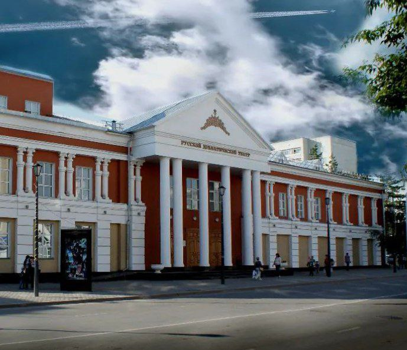
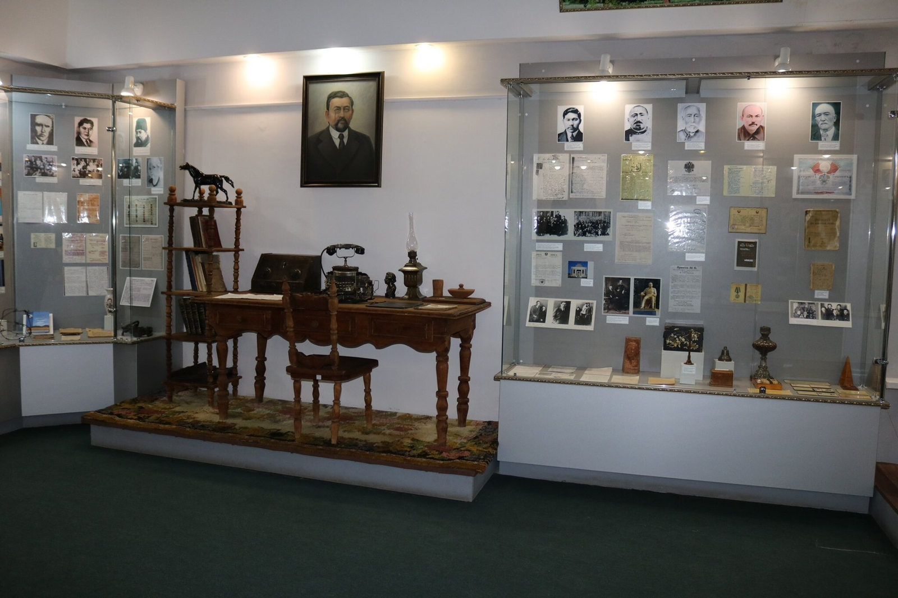
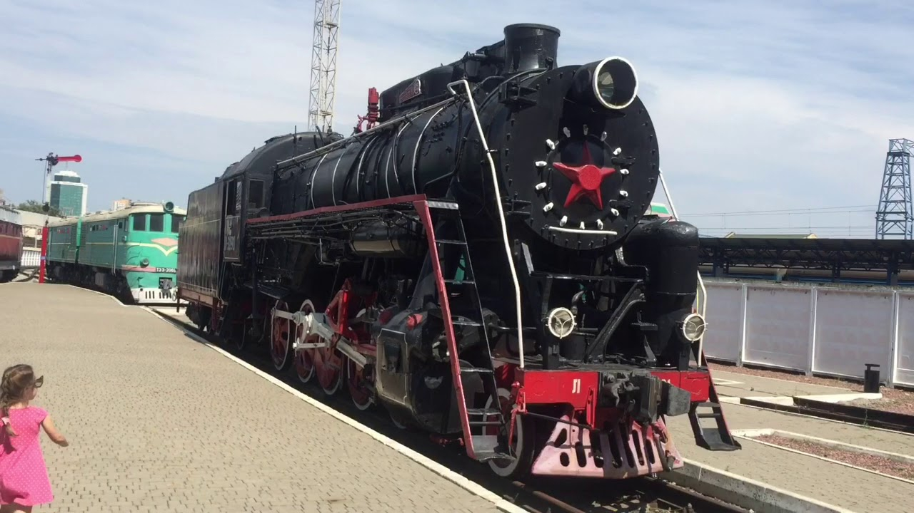
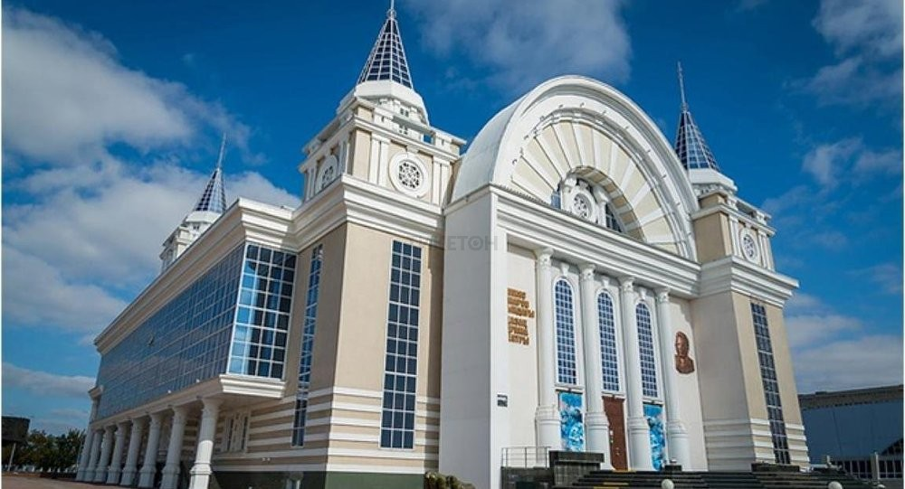
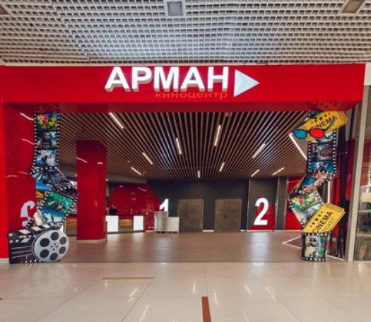
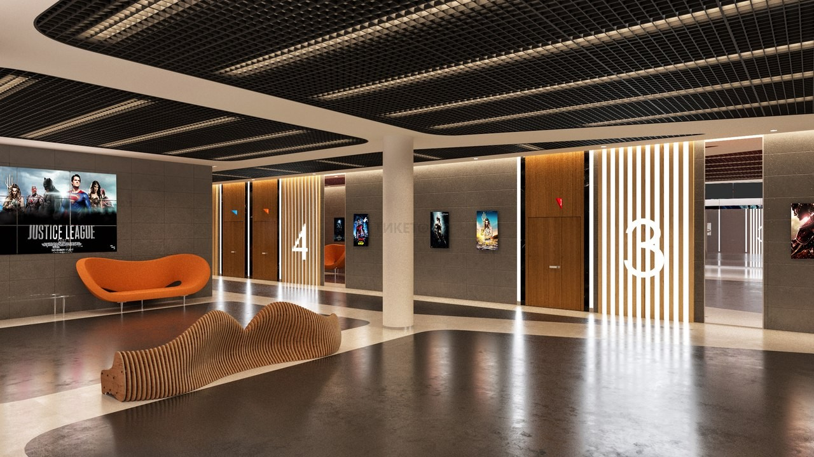
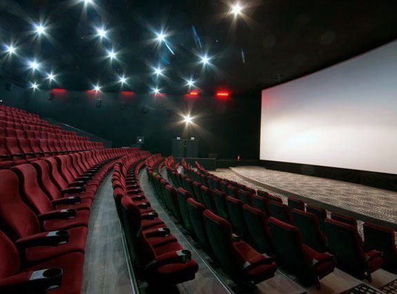
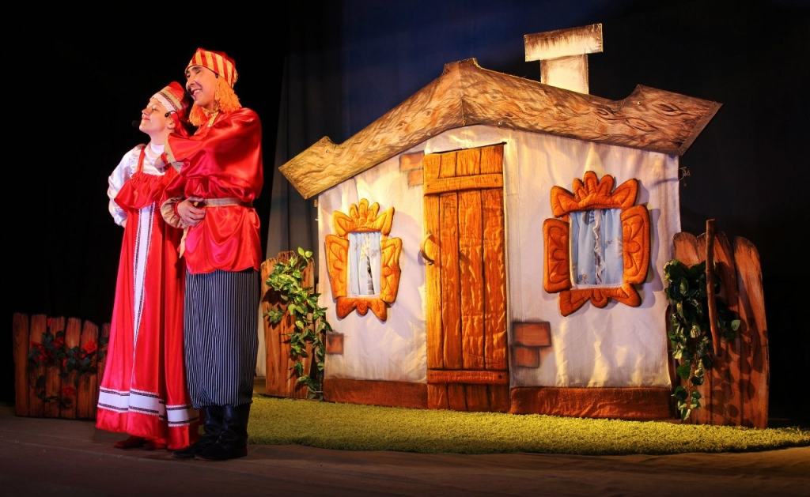
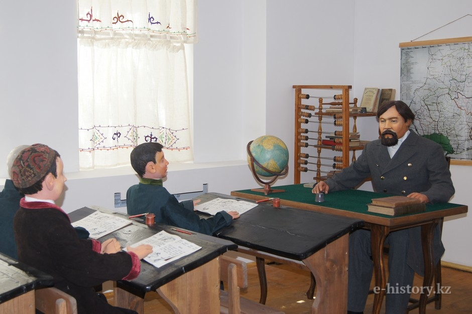
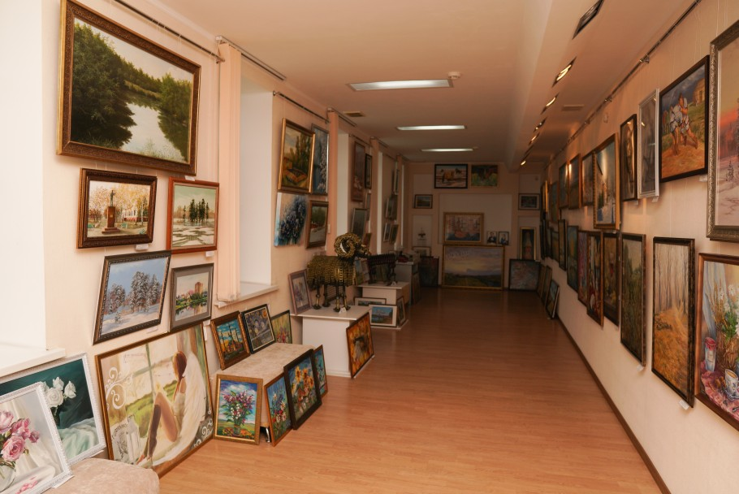

Qostanay
Все
Детский
Культурный
Спортивный
Кафе/Рестораны...
Другие
Театры
Кинотеатры
Музеи/Галереи

Русский Драматический Театр
ул. Байтурсынова, 191
×

Костанайский областной историко-краеведческий музей
ул. Алтынсарина, 115
×

Музей железнодорожного вокзала
ул. Дзержиноского, 3
×

Театр драмы им. И.Омарова
ул. Тауелсиздик, 144
×

Кинотеатр Арман
ул. Аль-Фараби, 48, ТРЦ «MART», 3 этаж
×

Кинотеарт Zodiac Cinema
пр-т. Нурсултана Назарбаева, 193, ТРЦ «KOSTANAY PLAZA», 2 этаж
×

Кинотеарт Казахстан
ул. Гоголя, 74
×

Деткий кукольный театр
ул. Перонная, 20
×

Мемориальный музей Ибрая Алтынсарина
ул. Аль-Фараби, 118A
×

Костанайская областная картинная галерея
ул. Алтынсарина, 113
×